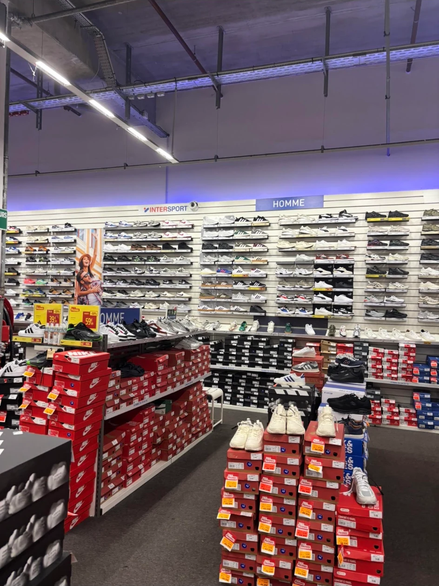
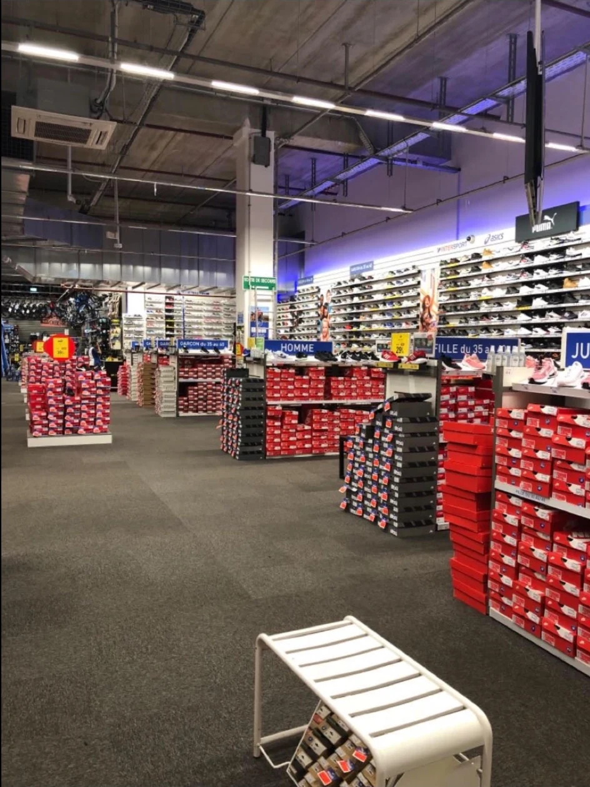
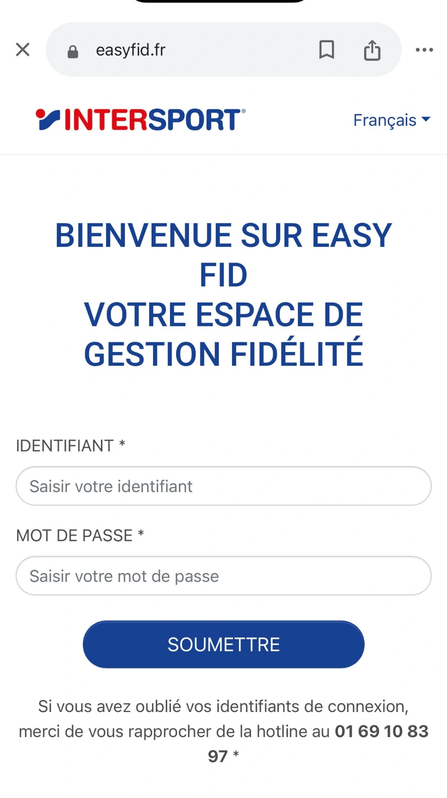
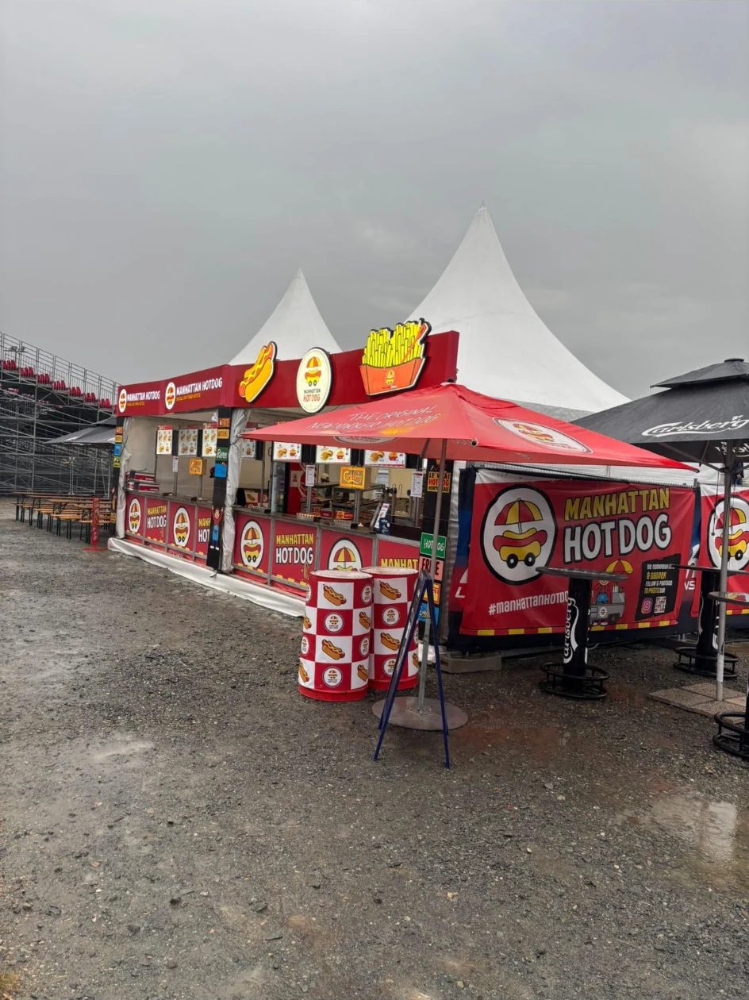
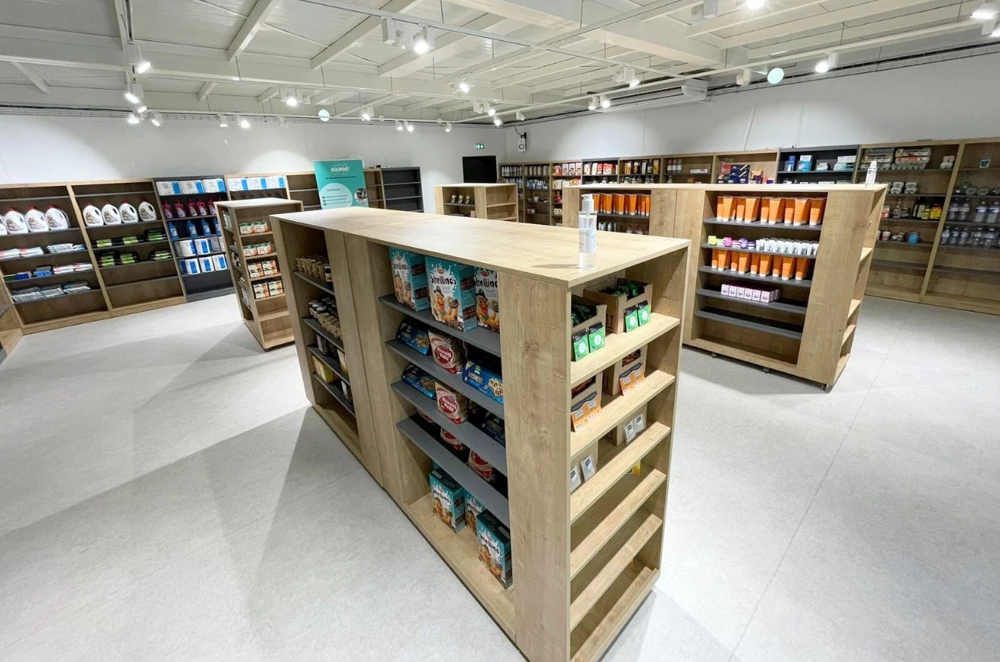
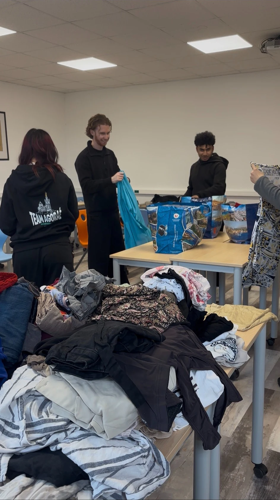

Intersport, les stands événementiels et l’Agoraé possèdent des contraintes, objectifs et publics très différents. J’ai appris à adapter l’organisation aux caractéristiques de chaque espace.
Compétence 03 · Retail
Piloter un espace de vente.
Organiser l’offre, assurer la disponibilité, fluidifier le parcours et suivre les indicateurs qui transforment un espace en outil de performance.
4 actions3 formats de vente360° vision terrain

Merchandising · stocks · opérations commercialesLa compétence
Piloter, c’est rendre l’espace lisible pour le client et maîtrisable pour l’équipe.
Mon alternance m’a permis d’aborder le rayon comme un système complet : réception, réserve, réassort, implantation, promotion, satisfaction et indicateurs.


01Intersport · Soldes 2026
Réorganiser entièrement le rayon chaussures pour un temps fort commercial.
Après le départ de l’animateur, j’ai participé activement à la préparation des soldes. Les produits ont été réimplantés selon le niveau de remise, la marque puis le prix, avec reprise des fonds de murs, des étiquettes et de la cohérence globale du merchandising.
- Indicateurs : chiffre d’affaires, volume des ventes et écoulement des stocks soldés.
- Résultat : offre plus lisible et opération commerciale mise en place dans les délais.
- Apprentissage : organisation et anticipation conditionnent la performance du rayon.
- Limite : temps court et suivi insuffisamment détaillé par univers.

02Intersport · Gestion quotidienne
Garantir la disponibilité par la réception, le stock et le réassort.
J’ai réceptionné les marchandises, contrôlé les quantités, organisé la réserve, assuré le réassort quotidien et utilisé GINKOIA pour suivre les niveaux et repérer les ruptures.
- Ressources : GINKOIA, terminal portable et documents de réception.
- Indicateurs : disponibilité, ruptures, niveau de stock et réassort.
- Résultat : meilleure réactivité du rayon face à la demande.
- Limite : dépendance aux délais fournisseurs et difficulté d’anticipation sur certains pics.

03Manhattan Hot Dog · Événementiel
Organiser un stand pour absorber des pics de fréquentation.
J’ai participé à l’installation, aux approvisionnements, au suivi des stocks, à la répartition des tâches et au maintien de la fluidité du service. Le stand devait rester propre, lisible et opérationnel malgré la pression.
- Indicateurs : niveau des stocks, volume des ventes et temps d’attente.
- Résultat : activité maintenue pendant les fortes affluences.
- Apprentissage : anticipation, ressources et coordination sont indissociables.
- Axe de progrès : formaliser davantage les indicateurs opérationnels.


04Agoraé · Expérience client
Faire de l’épicerie solidaire un véritable lieu de vie étudiante.
En tant que membre du pôle Expérience Client, j’ai participé aux animations, à l’événement de Noël et à des actions solidaires comme la distribution de vêtements. L’objectif était de renforcer la convivialité et l’attractivité du lieu.
- Indicateurs : participation, fréquentation et retours des étudiants.
- Résultat : environnement plus convivial et expérience enrichie.
- Apprentissage : un espace crée de la valeur par l’usage et le lien social.
- Limite : moyens financiers et disponibilités variables.
Composantes essentielles
Comprendre, organiser et améliorer l’espace.
Réimplantation, organisation des soldes, lisibilité des remises, mise en avant des produits et animation du lieu sont autant de leviers utilisés pour améliorer la fréquentation et la performance.
L’enquête de satisfaction a permis d’identifier les attentes liées à l’attente et à la disponibilité des vendeurs. L’Agoraé montre aussi qu’une expérience réussie dépasse le simple acte de transaction.
Apprentissages critiques
Les leviers du pilotage retail.
Disponibilité produit, concurrence, omnicanalité, promotions et qualité de service influencent directement la performance d’un magasin spécialisé.
La réimplantation du running et l’organisation des soldes ont été pensées à partir du comportement client, de la demande et de la nécessité de rendre l’offre plus lisible.
Plans d’implantation, organisation par remise, marque et prix, fonds de murs et cohérence des gondoles ont été mobilisés pour structurer l’espace.
Site, réseaux sociaux, fidélité EasyFID et point de vente composent un parcours continu. Je comprends mieux leur articulation, même si je n’en pilotais pas directement tous les outils.
Bilan pilotage
Une vision globale du point de vente.
Je suis désormais capable de participer à l’organisation et à l’amélioration d’un espace en tenant compte des attentes clients, des contraintes opérationnelles, des stocks et des objectifs commerciaux. Mes expériences m’ont montré que le merchandising, la disponibilité et la qualité du parcours fonctionnent comme un ensemble. Je souhaite progresser sur la construction de tableaux de bord et l’analyse plus stratégique des performances.